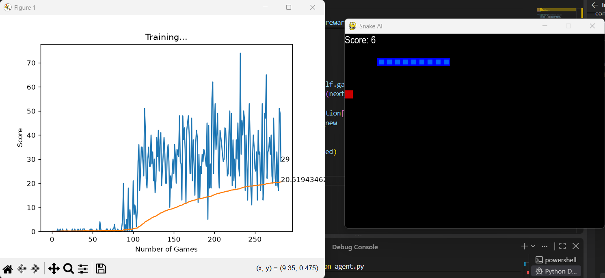
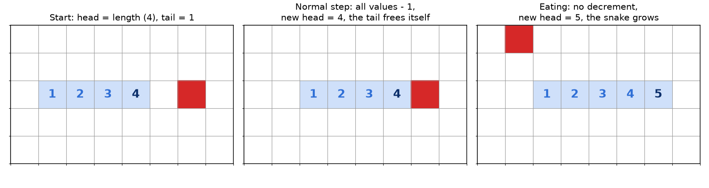
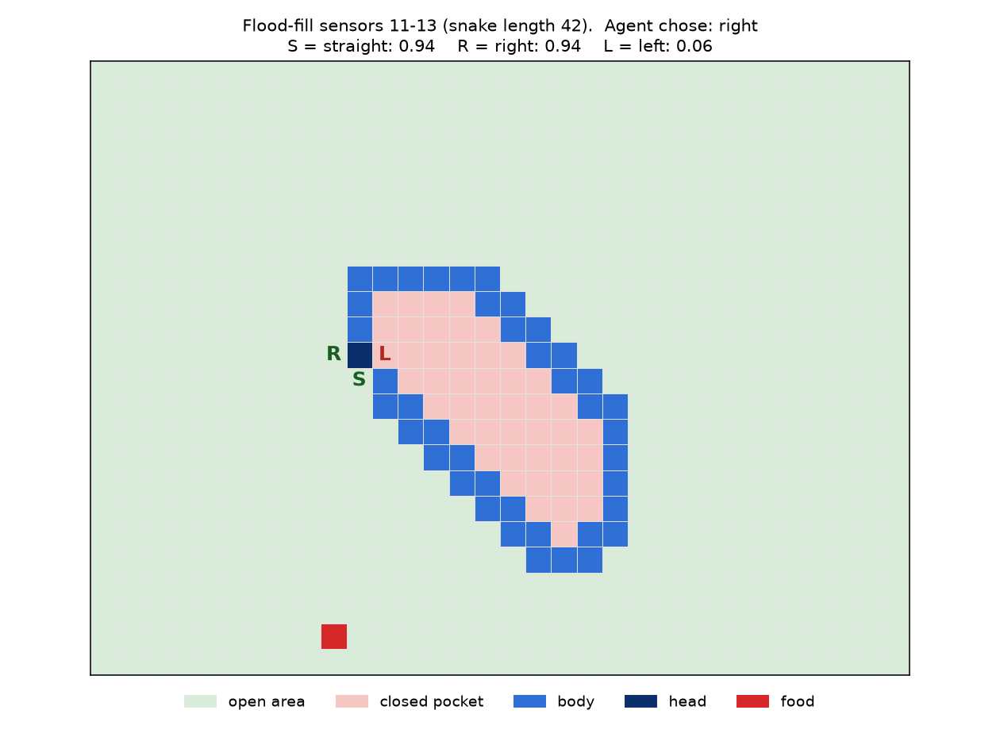
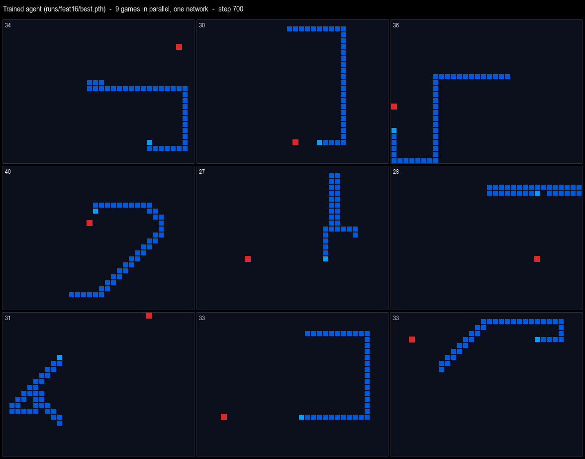

דוח פרויקט · סוכן Deep Q-Learning למשחק Snake · קוד המקור: github.com/juli99/deep_learning_snake
| ממוצע ניקוד | שיא | זמן אימון | צעדים בשנייה |
|---|---|---|---|
| 145.4 (במקור 33.5) | 203 (במקור 84) | 20 שניות (במקור כשעה וחצי) | כ-5,000 (במקור 39) |
הסוכן הסופי מגיע לממוצע של 145.4 נקודות ב-500 משחקים, פי 4.3 מהמימוש המקורי (33.5). הוא מגיע לזה אחרי 20 שניות אימון, לעומת כשעה וחצי במקור.
מטרת הפרויקט היא ללמד מחשב לשחק Snake בעזרת למידת חיזוק עמוקה (Deep Reinforcement Learning). הסוכן לא מקבל אף דוגמה של משחק נכון. הוא לומד רק מהתגמול המספרי שמגיע מהסביבה: +10 כשהנחש אוכל, −10 כשהוא מת, ו-0 בכל צעד אחר.
העבודה נעשתה בשני שלבים:
מימוש בסיסי (game.py, agent.py, model.py, helper.py): DQN קלאסי על משחק pygame יחיד. הוא עובד, אבל לאט, ונתקע על ממוצע של כ-33.
מימוש משופר: סביבה וקטורית שמריצה 64 משחקים במקביל, Double DQN עם רשת מטרה, ו-5 חיישנים חדשים שנותנים לנחש תמונה של השטח הפנוי סביבו.
הדוח מסביר את התיאוריה, כל קובץ וכל פונקציה, את הסיבה לכל החלטה, ואת התוצאות שנמדדו.
הפרויקט מממש את אלגוריתם Double DQN: רשת נוירונים שלומדת להעריך כמה נקודות עתידיות שווה כל פעולה בכל מצב.
הבעיה מנוסחת כתהליך החלטה מרקובי (MDP). בכל צעד הסוכן רואה מצב s, בוחר פעולה a, מקבל תגמול r ועובר למצב חדש s′.
| רכיב | בפרויקט |
|---|---|
| מצב (state) | וקטור של 11 או 16 חיישנים (פרק 6) |
| פעולות (actions) | 3: ישר, פנייה ימינה, פנייה שמאלה (יחסית לכיוון הנוכחי) |
| תגמול (reward) | +10 אכילה, −10 מוות, 0 אחרת |
| סוף משחק | פגיעה בקיר, פגיעה בגוף, או רעב (יותר מ-100×אורך צעדים בלי אוכל) |
| מקדם הנחה γ | 0.9 במקור, 0.95 במימוש החדש |
הבחירה בפעולות יחסיות מונעת מהנחש להסתובב 180 מעלות לתוך עצמו, ומקטינה את מרחב הפעולות מ-4 ל-3.
פונקציית הערך Q(s, a) היא סכום התגמולים המונחת שהסוכן יקבל אם יבצע את a במצב s ומשם ישחק באופן אופטימלי. היא מקיימת את משוואת בלמן:
כשהמשחק נגמר (done) אין עתיד, והמטרה היא פשוט r.
מספר המצבים אפשריים עצום, ולכן אי אפשר לשמור טבלה. במקום זה רשת נוירונים מקבלת את וקטור המצב ומחזירה 3 ערכי Q, אחד לכל פעולה. הרשת מאומנת להקטין את ההפרש בין התחזית שלה לבין מטרת בלמן.
שלושה מנגנונים מייצבים את האימון:
Experience Replay: כל מעבר (s, a, r, s′, done) נשמר בזיכרון, והאימון נעשה על מנות אקראיות ממנו. זה שובר את המתאם בין צעדים עוקבים ומאפשר ללמוד מכל דוגמה כמה פעמים.
ε-greedy: בהסתברות ε הסוכן בוחר פעולה אקראית (חקירה), ואחרת את הפעולה עם ה-Q הגבוה (ניצול). ε יורד במהלך האימון.
Target Network: עותק של הרשת שמתעדכן לאט ומשמש לחישוב המטרה. בלעדיו, המטרה זזה עם כל צעד של הרשת עצמה, והאימון נוטה להתבדר.
ה-max במשוואת בלמן בוחר את הערך הגבוה ביותר, ולכן נוטה לבחור בערכים שהוערכו ביתר בטעות (overestimation). Double DQN מפריד בין מי שבוחר למי שמעריך: הרשת הראשית בוחרת את הפעולה, ורשת המטרה מעריכה אותה.
עדכון רשת המטרה הוא עדכון רך (soft update) אחרי כל צעד למידה, עם τ = 0.01:
המימוש המקורי לומד, אבל מוגבל ל-39 צעדים בשנייה ולממוצע של כ-33. הקבצים נשארו בפרויקט בלי שינוי, כנקודת השוואה.
| קובץ | פונקציה / מחלקה | מה היא עושה |
|---|---|---|
game.py | SnakeGameAI.__init__ | פותח חלון pygame בגודל 640×480 (לוח של 32×24 משבצות של 20 פיקסלים) |
game.py | reset | נחש באורך 3 במרכז, פונה ימינה, ניקוד 0, אוכל חדש |
game.py | _place_food | משבצת אקראית; אם היא על הנחש, קריאה רקורסיבית מחדש |
game.py | play_step(action) | מזיז את הנחש, בודק מוות ואכילה, מצייר, ומחכה ל-clock.tick(40). מחזיר (תגמול, סוף, ניקוד) |
game.py | is_collision(pt) | פגיעה בקיר או בגוף (חיפוש ברשימה) |
game.py | _move(action) | מתרגם [ישר, ימינה, שמאלה] לכיוון מוחלט בעזרת סדר השעון |
game.py | _update_ui | ציור הנחש, האוכל והניקוד |
agent.py | Agent.__init__ | רשת 11→256→3, זיכרון deque של 100 אלף, טעינת model/model.pth אם קיים |
agent.py | get_state(game) | 11 חיישנים בוליאניים: סכנה ישר/ימינה/שמאלה, כיוון, מיקום האוכל |
agent.py | remember | הוספת מעבר לזיכרון |
agent.py | train_short_memory | צעד למידה על המעבר האחרון בלבד |
agent.py | train_long_memory | בסוף כל משחק: צעד למידה על 1,000 מעברים אקראיים |
agent.py | get_action | ε-greedy עם ε = 80 − מספר המשחקים |
agent.py | train() | הלולאה הראשית; שומרת מודל בכל שיא חדש |
model.py | Linear_QNet | שכבה נסתרת אחת עם ReLU; save שומר משקלים, מספר משחקים ושיא |
model.py | QTrainer.train_step | MSE מול מטרת בלמן, מחושבת בלולאת Python על כל דוגמה, עם אותה רשת עצמה |
helper.py | plot | גרף חי של הניקוד והממוצע, עם plt.pause(0.1) |
ציור בכל צעד: clock.tick(40) מגביל את האימון לכ-39 צעדים בשנייה, גם כשאין מי שצופה.
משחק אחד בלבד: כל צעד מוסיף לזיכרון דוגמה אחת, והדוגמאות הסמוכות מתואמות מאוד.
plt.pause(0.1) אחרי כל משחק מוסיף עוד עיכוב.
לולאת Python ב-train_step: הרשת מופעלת בנפרד על כל אחת מ-1,000 הדוגמאות, במקום פעם אחת על כל ה-batch.
אין רשת מטרה: המטרה מחושבת עם אותה רשת שמתעדכנת, ולכן זזה בכל צעד.
חקירה קצרה מדי: הפעולות האקראיות נעלמות לגמרי אחרי 80 משחקים.
הנחש עיוור לגוף שלו: החיישנים רואים משבצת אחת קדימה בלבד. כל 500 משחקי ההערכה של המודל המקורי הסתיימו בהתנגשות בגוף, כי הנחש נכנס לכיסים סגורים.
בעיות 1–4 הן בעיות מהירות; בעיות 5–7 פוגעות באיכות הלמידה. המימוש החדש פותר את שתי הקבוצות.

איור 1: המימוש המקורי בזמן אימון (צילום מסך). משחק אחד בלבד, שמצויר בכל צעד, וגרף שמתעדכן אחרי כל משחק. אחרי כ-280 משחקים הממוצע (הקו הכתום) עדיין מתחת ל-21.
המימוש החדש מפריד בין שלושה חלקים: הסביבה (חוקי המשחק), הסוכן (הרשת והלמידה), והציור. כך אפשר לאמן בלי מסך כלל, ולצייר רק כשרוצים לצפות.
| קובץ | תפקיד |
|---|---|
snake_env.py | סביבה וקטורית של N משחקים וחישוב החיישנים |
dqn.py | רשת, זיכרון וסוכן Double DQN |
train.py | לולאת האימון, הערכה תקופתית ושמירת תוצאות |
evaluate.py | מדידה של מודל על 500 משחקים, כולל המודל המקורי |
watch.py | צפייה במודל מאומן במסך מפוצל |
split_view.py | ציור כמה משחקים בחלון pygame אחד |
compare_runs.py | גרף השוואה בין ריצות |
model_select.py | בחירת המודל הכי טוב מתוך runs/ |
runs/<name>/ | תוצרי כל ריצה: best.pth, last.pth, log.csv, eval.csv, progress.png |
בכל צעד של הלולאה כל 64 המשחקים זזים יחד, 64 מעברים נכנסים לזיכרון, והרשת מבצעת צעד למידה אחד על 512 מעברים אקראיים. רשת המטרה משמשת רק לחישוב המטרה, ונגררת אחרי הרשת הראשית.
snake_env.pyהמחלקה VecSnakeEnv מריצה N משחקים במקביל כפעולות על מערכי NumPy, בלי לולאה על המשחקים ובלי ציור. היא מגיעה ל-5,000–9,000 צעדים בשנייה, פי 130–220 מהמקור. החוקים זהים ל-game.py: לוח 32×24, נחש באורך 3 פונה ימינה, +10/−10.
המערך body בגודל (N, 24, 32). הערך בכל משבצת הוא מספר הצעדים שהיא עוד תהיה תפוסה. הראש מקבל את אורך הנחש, והזנב את הערך 1.
צעד רגיל: כל הערכים יורדים ב-1, והזנב מתפנה מעצמו. אין צורך לשמור רשימת משבצות.
אכילה: לא מורידים כלום, והנחש גדל במשבצת אחת.
התנגשות בגוף: בדיקה אחת, body[y, x] > 0, במקום חיפוש ברשימה כמו ב-is_collision המקורי.

איור 2: דוגמה של ייצוג הלוח על נחש באורך 4. משמאל: מצב התחלתי. באמצע: צעד רגיל, כל המספרים ירדו ב-1 והראש החדש קיבל 4. מימין: אכילה, אף מספר לא ירד, והראש החדש קיבל 5. אותה פעולה רצה בבת אחת על כל 64 הלוחות.
| פונקציה | מה היא עושה | פרט מימוש חשוב |
|---|---|---|
__init__(n_envs=64, ...) | מקצה מערכים לכל המשחקים: לוח, ראש, כיוון, אורך, אוכל, ניקוד, רעב | כל שדה הוא מערך באורך N |
reset(mask) | מאפס רק את המשחקים שמסומנים ב-mask | משחק שנגמר מתחיל מחדש מיד, ושאר המשחקים ממשיכים |
_place_food(ids) | אוכל במשבצת פנויה אקראית | רעש אקראי על כל הלוח, −1 על משבצות תפוסות, ו-argmax. בלי רקורסיה כמו במקור |
step(actions) | מזיז את כל המשחקים צעד אחד | מחזיר תגמולים, סימון סוף וניקוד סופי; מאפס משחקים שנגמרו |
observe() | מחזיר מטריצה (N, 16) של חיישנים | מפורט בפרק 6 |
snapshot(i) | משבצות הנחש מהראש לזנב, אוכל וניקוד של משחק i | משמש רק לציור; ממיין לפי הערכים ב-body |
stepהכיוון החדש מחושב במודולו 4: ישר = 0, ימינה = +1, שמאלה = −1 (סדר הכיוונים: ימינה, למטה, שמאלה, למעלה).
במשחקים שבהם הנחש לא אוכל, כל הלוח יורד ב-1 (הזנב זז). זה קורה לפני בדיקת ההתנגשות, כך שמותר להיכנס למשבצת שהזנב עוזב באותו צעד.
מוות = קיר, או גוף, או רעב (יותר מ-100×אורך צעדים מאז האוכל האחרון).
נחשים חיים מעדכנים ראש ואורך; מי שאכל מקבל אוכל חדש; משחקים שנגמרו מתאפסים.
הסביבה נבדקה מול מימוש רגיל צעד אחרי צעד, על 20,000 צעדים, בלי אף הבדל (לפי ה-README).
הבדל אחד מהמקור: ב-game.py המונה frame_iteration מתאפס רק בתחילת משחק, ולכן כלל הרעב שם סופר את כל הצעדים במשחק. ב-snake_env.py המונה מתאפס בכל אכילה.
חמשת החיישנים החדשים הם השינוי שהעלה את הממוצע מ-38 ל-145. עם אותו קוד בדיוק ו-11 חיישנים בלבד, הממוצע נשאר סביב 37.
| # | חיישן | ערכים | למה הוא שם |
|---|---|---|---|
| 0–2 | סכנה ישר / ימינה / שמאלה | 0 או 1 | מונע מוות מיידי בקיר או בגוף (מקורי) |
| 3–6 | כיוון תנועה: שמאלה / ימינה / למעלה / למטה | one-hot | מאפשר לקשר בין פעולה יחסית למיקום האוכל (מקורי) |
| 7–10 | אוכל משמאל / מימין / למעלה / למטה | 0 או 1 | מכוון את הנחש לאוכל (מקורי) |
| 11–13 | שטח פנוי נגיש אחרי ישר / ימינה / שמאלה | 0 עד 1 | מזהה מראש כיס שהגוף סוגר (חדש) |
| 14 | רעב: צעדים מאז האוכל / מגבלת הרעב | 0 עד 1 | מאפשר ללמוד שלא להסתובב במעגלים עד מוות מרעב (חדש) |
| 15 | אורך הנחש / 768 משבצות | 0 עד 1 | נחש ארוך צריך לשחק זהיר יותר מנחש קצר (חדש) |
בונים מפת משבצות פנויות לכל המשחקים: body <= 1. הזנב (ערך 1) נחשב פנוי, כי הוא מתפנה בצעד הבא. הראש מסומן כתפוס.
scipy.ndimage.label מסמן רכיבי קשירות (שכנים ב-4 כיוונים). הקריאה רצה על מערך תלת-ממדי של כל המשחקים, עם מבנה שכנות שאין בו קשר בין לוחות. כך כל 64 המשחקים מחושבים בקריאה אחת.
np.bincount סופר את גודל כל רכיב.
לכל אחת משלוש המשבצות שליד הראש קוראים את גודל הרכיב שלה, מחלקים במספר המשבצות הפנויות, ושמים 0 אם יש שם סכנה.
דוגמה אמיתית ממשחק של הסוכן המאומן (איור 3): נחש באורך 42 כמעט סגר על עצמו כיס של 46 משבצות. פנייה שמאלה מובילה לתוכו, ולכן חיישן 13 מקבל 0.06. ישר וימינה מובילים לשטח הפתוח ומקבלים 0.94. הסוכן בחר בפנייה ימינה. חיישני הסכנה המקוריים (0–2) היו מראים 0 בכל שלושת הכיוונים, כי המשבצת הראשונה בכולן פנויה. עם 11 חיישנים בלבד אין לרשת שום דרך להבדיל בין המהלך הקטלני למהלך הבטוח.

איור 3: מצב אמיתי ממשחק של הסוכן המאומן. S, R, L הן שלוש המשבצות האפשריות (ישר, ימינה, שמאלה). השטח הוורוד הוא הכיס שהגוף סוגר; נחש שייכנס לשם ימות.
במקור החיישנים היו בוליאניים בלבד. כאן כל החיישנים מנורמלים לטווח 0–1, כך שאף חיישן לא שולט ברשת בגלל סדר גודל. הדגל --features 11 ב-train.py משתמש רק ב-11 הראשונים, לניסוי ההשוואה.
dqn.pydqn.py מממש Double DQN עם רשת מטרה וזיכרון NumPy, ומחשב את כל ה-batch בפעולה אחת, בלי לולאת Python.
| מחלקה / פונקציה | מה היא עושה |
|---|---|
QNet | רשת של 16 ← 256 ← 256 ← 3 עם ReLU. הפלט: ערך Q לכל פעולה |
ReplayBuffer.__init__ | מקצה מראש חמישה מערכים של 200 אלף שורות: s, a, r, s′, done |
ReplayBuffer.add_batch | מוסיף 64 מעברים בבת אחת, כמערך מעגלי (הישן ביותר נדרס) |
ReplayBuffer.sample | בוחר 512 אינדקסים אקראיים ומחזיר טנזורים |
DQNAgent.__init__ | יוצר רשת ראשית ורשת מטרה זהות, Adam (lr = 0.001), וזיכרון |
DQNAgent.act(obs, ε) | ε-greedy לכל המשחקים יחד: מעבר אחד ברשת והגרלת מסכת חקירה |
DQNAgent.learn() | צעד למידה אחד (פירוט למטה) |
DQNAgent.save | שומר משקלים, היפר-פרמטרים ומטא-דאטה (צעדים, שיא, ציון הערכה) |
DQNAgent.load_policy | טוען קובץ ובונה ממנו רשת בגודל הנכון (11 או 16 כניסות) |
learn()דוגמים 512 מעברים מהזיכרון.
מחשבים Q(s, a) של הפעולה שבוצעה, בעזרת gather.
הרשת הראשית בוחרת a* = argmax Q(s′), ורשת המטרה מעריכה אותה (Double DQN).
מטרה: r + 0.95 · (1 − done) · Q_target(s′, a*).
Huber loss (smooth_l1_loss): כמו MSE לשגיאות קטנות, ולינארי לשגיאות גדולות. כך תגמול של −10 לא יוצר גרדיאנט עצום.
Gradient clipping לנורמה 10, נגד קפיצות.
עדכון רך של רשת המטרה, τ = 0.01.
| נושא | מקור (model.py, agent.py) | חדש (dqn.py) |
|---|---|---|
| רשת | 11→256→3 | 16→256→256→3 |
| מטרה | אותה רשת, max רגיל | רשת מטרה, Double DQN |
| פונקציית הפסד | MSE | Huber + clipping |
| חישוב ה-batch | לולאת Python על 1,000 דוגמאות | פעולה וקטורית אחת על 512 |
| זיכרון | deque של tuples, 100 אלף | מערכי NumPy, 200 אלף |
| תדירות למידה | צעד קצר בכל מהלך + צעד ארוך בסוף משחק | צעד אחד על batch בכל מהלך של 64 משחקים |
| ε | 80 − מספר משחקים; אפס אחרי 80 משחקים | יורד לינארית מ-1.0 ל-0.001 לאורך 25% מהצעדים |
ε מסתיים ב-0.001 ולא ב-0.01: נחש של 100 משבצות מבצע אלפי מהלכים במשחק, וב-0.01 כמעט בטוח שמהלך אקראי יהרוג אותו.
train.pytrain.py מאמן מיליון צעדים כברירת מחדל, ב-15,625 איטרציות של 64 משחקים, ובוחר את המודל הטוב לפי הערכה בלי אקראיות.
| פונקציה | מה היא עושה |
|---|---|
parse() | קוראת את פרמטרי שורת הפקודה (טבלה בהמשך) |
greedy_eval(agent, nf, n_games) | מריצה 50 משחקים במקביל בלי חקירה, עם seed קבוע (999), ומחזירה את ממוצע המשחק הראשון של כל סביבה |
save_plot(games_log, path) | שומרת progress.png: ניקוד לכל משחק וממוצע נע של 200 משחקים, לפי מספר משחקים ולפי זמן |
main() | לולאת האימון |
main()מחשבים ε לפי ההתקדמות.
agent.act בוחר 64 פעולות.
env.step מזיז את כל המשחקים, ו-env.observe מחזיר את המצבים החדשים.
64 המעברים נכנסים לזיכרון.
אחרי 5,000 מעברים ראשונים (warmup), צעד למידה אחד.
משחקים שנגמרו נרשמים ב-log.csv.
כל 100 אלף צעדים: greedy_eval, שורה ב-eval.csv, ואם זה שיא חדש, שמירת best.pth.
עם --view, ציור של המסך המפוצל כל 4 איטרציות. האימון לא מחכה למסך.
כל 10 שניות, שורת סטטוס במסוף: צעדים בשנייה, ממוצע, שיא, ε.
בסוף האימון רצה הערכה אחרונה, ונשמרים last.pth ו-progress.png.
| פרמטר | ברירת מחדל | משמעות |
|---|---|---|
--envs | 64 | מספר משחקים במקביל |
--steps | 1,000,000 | סך כל הצעדים, בכל המשחקים יחד |
--eps-start / --eps-end | 1.0 / 0.001 | טווח החקירה |
--eps-frac | 0.25 | חלק האימון שבו ε יורד |
--lr | 0.001 | קצב למידה של Adam |
--gamma | 0.95 | מקדם הנחה |
--batch | 512 | גודל מנה למידה |
--warmup | 5,000 | מעברים לפני תחילת הלמידה |
--eval-every / --eval-games | 100,000 / 50 | תדירות וגודל ההערכה |
--features | 16 | 11 = החיישנים המקוריים בלבד |
--view / --show | כבוי / 9 | מסך מפוצל בזמן אימון |
--name | חותמת זמן | שם התיקייה ב-runs/ |
ממוצע האימון כולל מהלכים אקראיים, ולכן הוא נמוך בהרבה מהיכולת האמיתית: כ-50 באימון, לעומת 105–145 בהערכה. הוא גם מערבב משחקים ששוחקו על ידי גרסאות שונות של הרשת. הערכה עם seed קבוע מודדת רשת אחת בתנאים שווים.
הערה: ה-docstring בראש train.py לא מעודכן. הוא מזכיר 1.5 מיליון צעדים ובחירה לפי ממוצע 200 משחקים, אבל הקוד עצמו עובד כפי שמתואר כאן.
זה סוכן אחד שמשחק ב-64 עותקים של הסביבה, לא 64 סוכנים נפרדים. יש רשת אחת, זיכרון אחד ואופטימייזר אחד. כל המשחקים משתמשים באותם משקלים בדיוק, וכל מה שקורה בכל משחק מלמד את אותה רשת. בספרות קוראים לזה vectorized environments.
מה זה "סוכן". בלמידת חיזוק, הסוכן (agent) הוא מי שמקבל החלטות: הוא רואה מצב, בוחר פעולה ולומד מהתגמול. בפרויקט הסוכן הוא המחלקה DQNAgent: רשת ה-Q, הזיכרון וכלל הבחירה ε-greedy. הסביבה (environment) היא המשחק עצמו.
אנלוגיה: סימולטאנית בשחמט. אמן שחמט שמשחק מול 64 לוחות בבת אחת עדיין משתמש במוח אחד. כל טעות בלוח כלשהו מלמדת אותו משהו שיעזור בכל הלוחות האחרים. כך בדיוק עובד הפרויקט: רשת אחת מחליטה בכל צעד על 64 פעולות, וכל 64 התוצאות נכנסות לאותו זיכרון.
ההבדל במספרים. בשנייה אחת המימוש המקורי אוסף 39 מעברים. המימוש החדש אוסף אלפים. המודל הטוב ביותר נשמר אחרי 100 אלף מעברים ו-20 שניות; כדי לאסוף את אותה כמות ניסיון במשחק אחד בקצב של 39 צעדים בשנייה היה צריך כ-43 דקות.
מהירות. במקום משחק אחד עם ציור בכל צעד (39 צעדים בשנייה), פקודת NumPy אחת מזיזה 64 נחשים. הרשת מופעלת פעם אחת על מטריצה של 64 מצבים, ולא 64 פעמים. העלות של צעד אחד מתחלקת על 64 מעברים.
יותר נתונים לכל צעד למידה. כל צעד למידה מגיע אחרי 64 מעברים חדשים. הזיכרון מתמלא מהר, והרשת לא מתאמנת שוב ושוב על אותן דוגמאות ישנות.
גיוון בנתונים. בכל רגע 64 המשחקים נמצאים בשלבים שונים: נחש קצר בהתחלה, נחש ארוך לקראת הסוף, נחש רעב. המעברים בזיכרון פחות מתואמים זה לזה, וזה בדיוק מה ש-Experience Replay צריך כדי שהאימון יהיה יציב.
הפרדה מהציור. המסך מצייר רק כמה משחקים ורק כל כמה צעדים, ולכן אפשר לצפות באימון בלי להאט אותו.
| מקור | חדש, 64 משחקים | |
|---|---|---|
| צעדי משחק בשנייה | כ-39 | 5,000–9,000 על הסביבה לבדה (README); כ-3,200–5,400 כולל למידה והערכות (log.csv) |
| זמן עד הרמה של המודל המקורי, 11 חיישנים | כשעה וחצי | כ-30 שניות |
| מיליון צעדים | כ-7 שעות (חישוב לפי 39 בשנייה) | 3 עד 5 דקות |
כמה סוכנים עם רשתות נפרדות היו מחלקים ביניהם את הנתונים, וכל אחד היה לומד לאט יותר. ב-Snake אין אינטראקציה בין נחשים, ולכן אין סיבה למידת רב-סוכנים. המטרה היא רשת אחת שמשחקת טוב, ו-64 המשחקים הם פשוט דרך מהירה לאסוף לה ניסיון. שיטות כמו A3C מריצות כמה "עובדים" מקביליים מאותה סיבה, וגם שם כולם מעדכנים רשת משותפת אחת.
מספר המשחקים קביע ב---envs. יותר משחקים נותנים יותר צעדים בשנייה, אבל פחות צעדי למידה לכל מעבר. לכן יש נקודת איזון, ו-64 הוא ערך ברירת המחדל שנבחר.
המסך המפוצל מציג כמה מהמשחקים המקביליים בחלון אחד, כרשת של לוחות. כל לוח הוא משחק נפרד עם נחש, אוכל וניקוד משלו, אבל כולם משוחקים על ידי אותה רשת.

איור 4: המסך המפוצל עם הסוכן המאומן (runs/feat16/best.pth) אחרי 700 צעדים. המספר בפינת כל לוח הוא הניקוד (27–40), הריבוע התכלת הבהיר הוא הראש והאדום הוא האוכל.
מה רואים בתמונה. בתשעת המשחקים הנחש משתמש באותה אסטרטגיה: הוא נע בקווים ישרים ארוכים או במדרגות אלכסוניות, וכמעט לא משאיר בין חלקי הגוף כיסים סגורים. זו התנהגות שאף אחד לא תכנת; הרשת למדה אותה מחיישני השטח הפנוי. הצגה של כמה משחקים יחד מראה שזו אסטרטגיה עקבית ולא מקרה מזל.
איך זה ממומש (split_view.py).
SplitView.__init__ מחשב רשת כמעט ריבועית: עם 9 משחקים יוצא 3×3, עם 16 יוצא 4×4. כל לוח בגודל 32×24 משבצות כפול גודל משבצת בפיקסלים.
draw עובר על המשחקים שנבחרו לתצוגה, שואל את הסביבה env.snapshot(k) מה המצב של משחק k, ומצייר אותו במקום שלו ברשת.
handle_events מחזיר False כשסוגרים את החלון, ואז הציור נעצר בלי לעצור את האימון.
למה הוא לא מאט את האימון. במקור הציור היה חלק מהמשחק, וכל צעד חיכה למסך. כאן הסביבה לא יודעת שקיים מסך בכלל: הציור קורא את המצב מבחוץ. עם --view מציירים רק 9 מתוך 64 המשחקים, ורק פעם ב-4 צעדים (--view-every). בלי --view לא מציירים כלום.
שני מקומות שבהם משתמשים בו:
| פקודה | מה רואים |
|---|---|
python train.py --view | את האימון עצמו: בהתחלה נחשים קצרים שמתים מהר (ε גבוה), ואחר כך נחשים שמגיעים לאוכל ומתארכים |
python watch.py | מודל מאומן משחק בלי אקראיות, עם ממוצע ושיא בשורת הכותרת |
חמישה קבצי עזר מודדים, משווים ומציגים מודלים מאומנים. כולם משתמשים באותה סביבה, כך שהמדידות הן בתנאים זהים.
| קובץ | פונקציות | מה הוא עושה |
|---|---|---|
evaluate.py | run_games(policy, n_games), main() | 500 משחקים בלי אקראיות (100 במקביל, seed 123). מדפיס ממוצע, חציון, מקסימום, מינימום וסיבת מוות: קיר, גוף או רעב. עם --legacy הוא טוען את המודל המקורי ומזין לו את 11 החיישנים הראשונים, שהם באותו סדר ובאותה משמעות |
watch.py | main() | מציג מודל מאומן משחק בכמה משחקים במקביל (ברירת מחדל 9), עם ממוצע ושיא בשורת הכותרת. --fps קובע את המהירות |
split_view.py | SplitView.__init__, handle_events, draw, close | מחלק חלון pygame אחד לרשת של לוחות ומצייר כל משחק בעזרת env.snapshot. handle_events מחזיר False כשסוגרים את החלון |
compare_runs.py | main() | קורא את eval.csv של כמה ריצות ומצייר את עקומות ההערכה לפי צעדים ולפי זמן, עם קו ייחוס של המודל המקורי (33.5). שומר runs/comparison.png |
model_select.py | best_model() | עובר על כל runs/*/best.pth ומחזיר את זה עם ציון ההערכה הגבוה ביותר |
סיבת המוות מחושבת לפני הצעד: אם המשבצת הבאה מחוץ ללוח זה קיר; אם חיישן הרעב במקסימום זה רעב; אחרת זו התנגשות בגוף.
המודל עם 16 חיישנים מנצח בפער גדול: ממוצע של 145.4 ושיא של 203 ב-500 משחקי הערכה. הסיבה היא החיישנים, לא המהירות ולא אורך האימון.
500 משחקים בלי אקראיות עם evaluate.py, באותם תנאים לכל המודלים (הנתונים מה-README):
| מודל | זמן אימון | ממוצע | שיא |
|---|---|---|---|
מקורי, 11 חיישנים (model/model.pth) | כשעה וחצי | 33.5 | 84 |
קוד חדש, 11 חיישנים (runs/feat11/best.pth) | 30 שניות | 37.8 | 77 |
קוד חדש, 16 חיישנים (runs/feat16/best.pth) | 20 שניות | 145.4 | 203 |

שתי הריצות זהות בכל הפרמטרים חוץ ממספר החיישנים. עם 11 חיישנים הסוכן תקוע סביב המודל המקורי לאורך כל האימון. עם 16 הוא מגיע לשיא בהערכה הראשונה, ומשם יורד ל-106.
runs/| ריצה | חיישנים | צעדים | זמן | משחקים | ממוצע באימון, 200 אחרונים | שיא באימון |
|---|---|---|---|---|---|---|
feat16 | 16 | 1,000,000 | 5.1 דקות | 2,308 | 93.3 | 175 |
feat11 | 11 | 1,000,000 | 3.1 דקות | 3,327 | 31.1 | 70 |
main | 16 | 4,000,000 | 24.6 דקות | 11,519 | 47.0 | 134 |
הריצה main נעשתה בגרסה מוקדמת של הקוד: ε סופי של 0.01, בלי קובץ eval.csv, ו-best.pth נבחר לפי ממוצע האימון. אימון ארוך פי 4 לא הביא בה לממוצע אימון גבוה יותר מזה של feat16.
המסקנה המרכזית: מה שהסוכן רואה חשוב יותר מכמה זמן הוא מתאמן. המהירות קיצרה את האימון משעה וחצי ל-30 שניות, אבל רק החיישנים החדשים העלו את התקרה מ-37 ל-145.
פירוט:
הייצוג חשוב יותר מהמהירות. אותו קוד בדיוק, עם 11 חיישנים במקום 16, נתקע סביב 37 גם אחרי מיליון צעדים. נחש שרואה משבצת אחת קדימה לא יכול לזהות מלכודת, ושום כמות של אימון לא מפצה על מידע שחסר במצב.
המהירות קיצרה את הניסויים. רמה של המודל המקורי מושגת ב-30 שניות במקום שעה וחצי. זה מה שאפשר להריץ השוואות כמו 11 מול 16 חיישנים בכמה דקות.
אימון ארוך יותר פגע. עם 16 חיישנים הציון ירד מ-144 ל-106 במהלך מיליון צעדים. ההסבר הסביר הוא catastrophic forgetting: כשהזיכרון מתמלא במצבים של נחש ארוך, הרשת מאבדת חלק ממה שעבד קודם. לכן בחירת best.pth לפי הערכה היא חיונית, ולא רק שמירת המודל האחרון.
ממוצע האימון מטעה. בריצת feat16 ממוצע 200 המשחקים האחרונים באימון הוא 93, לעומת 145 בהערכה. הפער נובע ממהלכים אקראיים ומשינוי הרשת לאורך האימון.
הסוכן הטוב נמצא מוקדם מאוד. best.pth של feat16 נשמר אחרי 100 אלף צעדים בלבד, 793 משחקים ו-20 שניות. עם חיישנים טובים, הבעיה קלה ללמידה.
המגבלה העיקרית היא נחש ארוך: לפי ה-README, 94% ממשחקי ההערכה עדיין נגמרים בהתנגשות בגוף, כשהנחש באורך 100 ויותר על לוח של 768 משבצות.
מגבלות נוספות:
החיישנים נבחרו ידנית. הרשת לא רואה את הלוח עצמו.
כל ריצה נעשתה עם seed אחד, ולכן אין הערכה של השונות בין ריצות.
ההערכה במהלך האימון מבוססת על 50 משחקים בלבד, ולכן רועשת.
כיווני המשך:
רשת קונבולוציה (CNN) שמקבלת את הלוח כולו, במקום חיישנים ידניים.
Prioritized Experience Replay ו-n-step returns, ללמידה מהירה יותר ממעברים חשובים.
קצב למידה יורד או עצירה מוקדמת לפי הערכה, נגד הירידה באימון ארוך.
חיישן "הזנב נגיש": נחש שיכול לעקוב אחרי הזנב שלו לא נתקע.
כמה seeds לכל ניסוי, עם ממוצע וסטיית תקן.
קוד המקור: github.com/juli99/deep_learning_snake
נדרשים Python 3.11 והספריות numpy, scipy, torch, pygame ו-matplotlib.
pip install -r requirements.txt
python train.py # אימון: 64 משחקים במקביל, בלי גרפיקה
python train.py --view # אימון עם מסך מפוצל של 9 משחקים
python train.py --features 11 --name feat11 # ניסוי ההשוואה
python watch.py # צפייה במודל הכי טוב
python watch.py --show 16 --fps 40
python evaluate.py # 500 משחקים: ממוצע, חציון, שיא, סיבת מוות
python evaluate.py --legacy model/model.pth # המודל המקורי
python compare_runs.py feat16 feat11 # גרף השוואה
python agent.py # המימוש המקוריכל אימון נשמר ב-runs/<name>/. הסקריפטים watch.py ו-evaluate.py בוחרים לבד את המודל עם ציון ההערכה הגבוה ביותר, אלא אם מעבירים --model.
ארבעה קטעים קצרים מחזיקים את עיקר הרעיונות של הפרויקט. הקוד המלא של שלושת הקבצים המרכזיים נמצא בנספח, וכל הפרויקט ב-GitHub.
snake_env.py, step)אין כאן לולאה על המשחקים. כל שורה פועלת על כל 64 המשחקים בבת אחת.
self.dir = (self.dir + np.where(actions == 1, 1, np.where(actions == 2, -1, 0))) % 4
nx, ny = self.hx + DX[self.dir], self.hy + DY[self.dir]
ate = (nx == self.fx) & (ny == self.fy)
# Tail moves forward unless the snake eats
moving = ~ate
self.body[moving] = np.maximum(self.body[moving] - 1, 0)
wall = (nx < 0) | (nx >= self.w) | (ny < 0) | (ny >= self.h)
cx, cy = np.clip(nx, 0, self.w - 1), np.clip(ny, 0, self.h - 1)
hit_self = self.body[self.idx, cy, cx] > 0
self.steps_since_food = np.where(ate, 0, self.steps_since_food + 1)
starved = self.steps_since_food > 100 * self.length
dead = wall | hit_self | starvedהשורה self.body[moving] - 1 היא כל תנועת הזנב (איור 2). הבדיקה body[...] > 0 היא כל בדיקת ההתנגשות בגוף.
snake_env.py, observe)# Flood fill of free cells (after the tail moves) for all games at once
free = self.body <= 1
free[self.idx, self.hy, self.hx] = False
labels, _ = ndimage.label(free, structure=_STRUCT)
sizes = np.bincount(labels.ravel())
sizes[0] = 0
lab = labels[self.idx[:, None], cpy, cpx]
area = np.where(danger, 0, sizes[lab]).astype(np.float32)
total_free = free.reshape(n, -1).sum(axis=1).astype(np.float32)
area /= np.maximum(total_free, 1)[:, None]_STRUCT מחבר שכנים רק בתוך אותו לוח, ולכן קריאה אחת ל-ndimage.label מסמנת את האזורים של כל 64 המשחקים. התוצאה היא המספרים שראינו באיור 3.
dqn.py, learn)s, a, r, s2, d = self.buffer.sample(self.batch_size, self.rng)
q_sa = self.q(s).gather(1, a[:, None]).squeeze(1)
with torch.no_grad():
a_star = self.q(s2).argmax(dim=1, keepdim=True) # online net chooses
q_next = self.q_target(s2).gather(1, a_star).squeeze(1) # target net evaluates
target = r + self.gamma * (1.0 - d) * q_next
loss = F.smooth_l1_loss(q_sa, target)
self.opt.zero_grad()
loss.backward()
nn.utils.clip_grad_norm_(self.q.parameters(), 10.0)
self.opt.step()
# Soft update: target <- tau*online + (1-tau)*target
with torch.no_grad():
for p_t, p in zip(self.q_target.parameters(), self.q.parameters()):
p_t.mul_(1 - self.tau).add_(p, alpha=self.tau)שתי השורות המסומנות ב-chooses ו-evaluates הן כל ההבדל בין DQN רגיל ל-Double DQN (סעיף 2.4).
train.py, main)for it in range(iters):
eps = max(args.eps_end, args.eps_start - (args.eps_start - args.eps_end) * it / max(1, eps_iters))
actions = agent.act(obs, eps) # 64 actions, one network pass
rewards, dones, final = env.step(actions) # all 64 games move together
next_obs = env.observe()[:, :nf]
agent.buffer.add_batch(obs, actions, rewards, next_obs, dones.astype(np.float32))
obs = next_obs
if agent.buffer.size >= args.warmup:
agent.learn() # one gradient step per 64 movesהערות הסוף בשורות של 15.4 נוספו לדוח לשם ההסבר. זה כל הרעיון של פרק 9 בשמונה שורות: סוכן אחד, 64 משחקים, זיכרון משותף.
הפרויקט לקח סוכן DQN שמשחק Snake בממוצע של 33.5 אחרי שעה וחצי אימון, והפך אותו לסוכן שמגיע ל-145.4 אחרי 20 שניות. שלושה שינויים עשו את זה:
סביבה וקטורית. 64 משחקים במקביל כפעולות מערכים, בלי ציור. סוכן אחד שמשחק בכולם אוסף ניסיון מהר פי מאה ויותר, ומגוון יותר.
חיישני שטח פנוי. שלושה מספרים שמחושבים ב-flood fill מראים לנחש מראש אילו מהלכים מובילים לכיס סגור. זה השינוי שהעלה את התקרה.
Double DQN מיוצב. רשת מטרה עם עדכון רך, Huber loss וחישוב וקטורי של ה-batch.
שתי תובנות חשובות עלו בדרך: אימון ארוך יותר יכול לפגוע בתוצאה, וממוצע האימון לא משקף את היכולת האמיתית. לכן הפרויקט מודד את הסוכן בהערכה נפרדת, בלי אקראיות, ושומר את המודל הטוב ביותר ולא את האחרון.
הצעד הבא הטבעי הוא לוותר על חיישנים שנבחרו ביד, ולתת לרשת קונבולוציה לראות את הלוח כולו. כך היא תוכל ללמוד לבד את מה שכאן חושב ידנית, ואולי גם את מה שעוד חסר כדי להתמודד עם נחש ארוך מאוד.
הקוד המלא של שלושת הקבצים המרכזיים מופיע בסוף קובץ ה-PDF של הדוח, וב-GitHub:
| קובץ | שורות | תוכן |
|---|---|---|
| snake_env.py | 166 | הסביבה הוקטורית והחיישנים |
| dqn.py | 106 | הרשת, הזיכרון וסוכן Double DQN |
| train.py | 187 | לולאת האימון וההערכה |
"""
snake_env.py — N Snake games running in parallel with NumPy (no graphics).
Why: the original game.py draws every frame and waits for clock.tick(40), so
training is capped at ~40 moves per second on one game. Here all games step
together as array operations, which gives thousands of moves per second.
Board representation
--------------------
body[i, y, x] = how many more steps cell (x, y) stays occupied in game i.
- the head cell gets value = snake length
- every normal step all values drop by 1, so the tail cell frees itself
- when the snake eats, nothing is decremented, so the snake grows by one
This makes moving, growing and collision checks pure array operations.
Rules match game.py: 32x24 cells (640x480 / 20), start length 3 heading right,
+10 for food, -10 for dying, and a game ends if no food is eaten for
100 * length steps (the original "stuck" rule).
"""
import numpy as np
from scipy import ndimage
# Directions in clockwise order: RIGHT, DOWN, LEFT, UP (same as game.py)
DX = np.array([1, 0, -1, 0])
DY = np.array([0, 1, 0, -1])
# 4-connectivity inside one board, no connection between different games
_STRUCT = np.zeros((3, 3, 3), dtype=bool)
_STRUCT[1] = [[0, 1, 0], [1, 1, 1], [0, 1, 0]]
N_FEATURES = 16
class VecSnakeEnv:
def __init__(self, n_envs=64, width=32, height=24, seed=None,
reward_food=10.0, reward_death=-10.0):
self.n, self.w, self.h = n_envs, width, height
self.rng = np.random.default_rng(seed)
self.reward_food, self.reward_death = reward_food, reward_death
self.body = np.zeros((n_envs, height, width), dtype=np.int32)
self.hx = np.zeros(n_envs, dtype=np.int64)
self.hy = np.zeros(n_envs, dtype=np.int64)
self.dir = np.zeros(n_envs, dtype=np.int64)
self.length = np.zeros(n_envs, dtype=np.int64)
self.fx = np.zeros(n_envs, dtype=np.int64)
self.fy = np.zeros(n_envs, dtype=np.int64)
self.score = np.zeros(n_envs, dtype=np.int64)
self.steps_since_food = np.zeros(n_envs, dtype=np.int64)
self.idx = np.arange(n_envs)
self.reset(np.ones(n_envs, dtype=bool))
# ── Game logic ──────────────────────────────────────────────────
def reset(self, mask):
ids = np.flatnonzero(mask)
if ids.size == 0:
return
self.body[ids] = 0
self.hx[ids], self.hy[ids] = self.w // 2, self.h // 2
self.dir[ids] = 0
self.length[ids] = 3
for k in range(3): # head, then two cells to the left
self.body[ids, self.h // 2, self.w // 2 - k] = 3 - k
self.score[ids] = 0
self.steps_since_food[ids] = 0
self._place_food(ids)
def _place_food(self, ids):
"""Random free cell for each game in ids (argmax of random noise over free cells)."""
noise = self.rng.random((ids.size, self.h, self.w))
noise[self.body[ids] > 0] = -1.0
flat = noise.reshape(ids.size, -1).argmax(axis=1)
self.fy[ids], self.fx[ids] = np.divmod(flat, self.w)
def step(self, actions):
"""
actions: int array (n,) — 0 straight, 1 turn right, 2 turn left (as in game.py)
returns rewards (n,), dones (n,), scores of games that just ended (n, -1 if not ended)
Finished games are reset automatically.
"""
self.dir = (self.dir + np.where(actions == 1, 1, np.where(actions == 2, -1, 0))) % 4
nx, ny = self.hx + DX[self.dir], self.hy + DY[self.dir]
ate = (nx == self.fx) & (ny == self.fy)
# Tail moves forward unless the snake eats
moving = ~ate
self.body[moving] = np.maximum(self.body[moving] - 1, 0)
wall = (nx < 0) | (nx >= self.w) | (ny < 0) | (ny >= self.h)
cx, cy = np.clip(nx, 0, self.w - 1), np.clip(ny, 0, self.h - 1)
hit_self = self.body[self.idx, cy, cx] > 0
self.steps_since_food = np.where(ate, 0, self.steps_since_food + 1)
starved = self.steps_since_food > 100 * self.length
dead = wall | hit_self | starved
alive = ~dead
self.length[ate & alive] += 1
self.score[ate & alive] += 1
self.hx[alive], self.hy[alive] = nx[alive], ny[alive]
self.body[self.idx[alive], ny[alive], nx[alive]] = self.length[alive]
rewards = np.where(dead, self.reward_death, np.where(ate, self.reward_food, 0.0)).astype(np.float32)
final_scores = np.where(dead, self.score, -1)
eaten = np.flatnonzero(ate & alive)
if eaten.size:
self._place_food(eaten)
self.reset(dead)
return rewards, dead, final_scores
# ── Observation ─────────────────────────────────────────────────
def observe(self):
"""
16 features per game:
0-2 danger straight / right / left (wall or body next step) [original 11]
3-6 moving left / right / up / down [original 11]
7-10 food left / right / up / down [original 11]
11-13 free area reachable after going straight / right / left,
as a fraction of all free cells (flood fill) [new]
14 hunger: steps since last food / starvation limit [new]
15 snake length / board size [new]
The flood-fill features let the snake see that a move leads into a
dead end (a pocket closed by its own body) before it enters it.
"""
n = self.n
dirs = np.stack([self.dir, (self.dir + 1) % 4, (self.dir - 1) % 4], axis=1) # straight, right, left
px = self.hx[:, None] + DX[dirs]
py = self.hy[:, None] + DY[dirs]
inside = (px >= 0) & (px < self.w) & (py >= 0) & (py < self.h)
cpx, cpy = np.clip(px, 0, self.w - 1), np.clip(py, 0, self.h - 1)
# a body cell with value 1 is the tail, which frees itself on the next move
occupied = self.body[self.idx[:, None], cpy, cpx] > 1
danger = ~inside | occupied
# Flood fill of free cells (after the tail moves) for all games at once
free = self.body <= 1
free[self.idx, self.hy, self.hx] = False
labels, _ = ndimage.label(free, structure=_STRUCT)
sizes = np.bincount(labels.ravel())
sizes[0] = 0
lab = labels[self.idx[:, None], cpy, cpx]
area = np.where(danger, 0, sizes[lab]).astype(np.float32)
total_free = free.reshape(n, -1).sum(axis=1).astype(np.float32)
area /= np.maximum(total_free, 1)[:, None]
obs = np.zeros((n, N_FEATURES), dtype=np.float32)
obs[:, 0:3] = danger
obs[:, 3] = self.dir == 2
obs[:, 4] = self.dir == 0
obs[:, 5] = self.dir == 3
obs[:, 6] = self.dir == 1
obs[:, 7] = self.fx < self.hx
obs[:, 8] = self.fx > self.hx
obs[:, 9] = self.fy < self.hy
obs[:, 10] = self.fy > self.hy
obs[:, 11:14] = area
obs[:, 14] = self.steps_since_food / (100 * self.length)
obs[:, 15] = self.length / (self.w * self.h)
return obs
# ── For drawing ─────────────────────────────────────────────────
def snapshot(self, i):
"""(body cells ordered head->tail, food cell, score) of game i."""
ys, xs = np.nonzero(self.body[i])
order = np.argsort(-self.body[i, ys, xs])
return list(zip(xs[order], ys[order])), (int(self.fx[i]), int(self.fy[i])), int(self.score[i])
"""
dqn.py — Double DQN agent with a target network and a NumPy replay buffer.
Differences from the original model.py / agent.py and why:
* Two hidden layers (256-256) instead of one.
* Target network: the Bellman target r + γ·Q_target(s', a*) uses a slowly
updated copy of the network, so the target does not move with every step.
* Double DQN: a* = argmax Q_online(s', ·), evaluated with Q_target — reduces
the over-estimation of Q values that plain DQN suffers from.
* Fully vectorized loss (no Python loop over samples) and Huber loss.
* Replay buffer stored in preallocated NumPy arrays instead of a deque of tuples.
* Epsilon decays with environment steps, not with the number of games.
"""
import numpy as np
import torch
import torch.nn as nn
import torch.nn.functional as F
class QNet(nn.Module):
def __init__(self, n_in, n_out=3, hidden=256):
super().__init__()
self.net = nn.Sequential(
nn.Linear(n_in, hidden), nn.ReLU(),
nn.Linear(hidden, hidden), nn.ReLU(),
nn.Linear(hidden, n_out),
)
def forward(self, x):
return self.net(x)
class ReplayBuffer:
def __init__(self, capacity, n_features):
self.cap = capacity
self.s = np.zeros((capacity, n_features), dtype=np.float32)
self.s2 = np.zeros((capacity, n_features), dtype=np.float32)
self.a = np.zeros(capacity, dtype=np.int64)
self.r = np.zeros(capacity, dtype=np.float32)
self.d = np.zeros(capacity, dtype=np.float32)
self.pos, self.size = 0, 0
def add_batch(self, s, a, r, s2, d):
n = len(a)
idx = (self.pos + np.arange(n)) % self.cap
self.s[idx], self.a[idx], self.r[idx], self.s2[idx], self.d[idx] = s, a, r, s2, d
self.pos = (self.pos + n) % self.cap
self.size = min(self.size + n, self.cap)
def sample(self, batch, rng):
idx = rng.integers(0, self.size, batch)
return (torch.from_numpy(self.s[idx]), torch.from_numpy(self.a[idx]), torch.from_numpy(self.r[idx]),
torch.from_numpy(self.s2[idx]), torch.from_numpy(self.d[idx]))
class DQNAgent:
def __init__(self, n_features, n_actions=3, hidden=256, lr=1e-3, gamma=0.95,
buffer_size=200_000, batch_size=512, tau=0.01, seed=0):
self.n_actions, self.gamma, self.batch_size, self.tau = n_actions, gamma, batch_size, tau
self.rng = np.random.default_rng(seed)
torch.manual_seed(seed)
self.q = QNet(n_features, n_actions, hidden)
self.q_target = QNet(n_features, n_actions, hidden)
self.q_target.load_state_dict(self.q.state_dict())
self.opt = torch.optim.Adam(self.q.parameters(), lr=lr)
self.buffer = ReplayBuffer(buffer_size, n_features)
self.hparams = dict(n_features=n_features, n_actions=n_actions, hidden=hidden, lr=lr,
gamma=gamma, batch_size=batch_size, tau=tau)
@torch.no_grad()
def act(self, obs, epsilon):
"""ε-greedy for a whole batch of games at once."""
greedy = self.q(torch.from_numpy(obs)).argmax(dim=1).numpy()
explore = self.rng.random(len(obs)) < epsilon
return np.where(explore, self.rng.integers(0, self.n_actions, len(obs)), greedy)
def learn(self):
s, a, r, s2, d = self.buffer.sample(self.batch_size, self.rng)
q_sa = self.q(s).gather(1, a[:, None]).squeeze(1)
with torch.no_grad():
a_star = self.q(s2).argmax(dim=1, keepdim=True) # online net chooses
q_next = self.q_target(s2).gather(1, a_star).squeeze(1) # target net evaluates
target = r + self.gamma * (1.0 - d) * q_next
loss = F.smooth_l1_loss(q_sa, target)
self.opt.zero_grad()
loss.backward()
nn.utils.clip_grad_norm_(self.q.parameters(), 10.0)
self.opt.step()
# Soft update: target ← τ·online + (1-τ)·target
with torch.no_grad():
for p_t, p in zip(self.q_target.parameters(), self.q.parameters()):
p_t.mul_(1 - self.tau).add_(p, alpha=self.tau)
return loss.item()
def save(self, path, **meta):
torch.save({"model_state": self.q.state_dict(), "hparams": self.hparams, **meta}, path)
@staticmethod
def load_policy(path):
ck = torch.load(path, map_location="cpu", weights_only=False)
hp = ck["hparams"]
net = QNet(hp["n_features"], hp["n_actions"], hp["hidden"])
net.load_state_dict(ck["model_state"])
net.eval()
return net, ck
"""
train.py — fast training: many Snake games in parallel, headless, Double DQN.
python train.py # 64 games in parallel, 1.5M moves
python train.py --envs 128 --steps 3e6 # more games / longer
python train.py --view # also watch 9 of the games (split screen)
python train.py --view --show 16 # watch 16 games
Every step, all games move at once: the network picks actions for the whole
batch, every game's move goes into the replay buffer, and the network does one
gradient step. Output (in runs/<name>/):
best.pth network with the best average score over the last 200 games
last.pth network at the end
log.csv one line per finished game
progress.png learning curve (average score vs. games and vs. time)
"""
import argparse
import csv
import time
from pathlib import Path
import numpy as np
import torch
from dqn import DQNAgent
from snake_env import N_FEATURES, VecSnakeEnv
def parse():
ap = argparse.ArgumentParser(description="Train a Snake agent with parallel games")
ap.add_argument("--envs", type=int, default=64, help="games played in parallel")
ap.add_argument("--steps", type=float, default=1e6, help="total moves (all games together)")
ap.add_argument("--eps-start", type=float, default=1.0)
ap.add_argument("--eps-end", type=float, default=0.001)
ap.add_argument("--eps-frac", type=float, default=0.25, help="share of training over which epsilon decays")
ap.add_argument("--lr", type=float, default=1e-3)
ap.add_argument("--gamma", type=float, default=0.95)
ap.add_argument("--batch", type=int, default=512)
ap.add_argument("--warmup", type=int, default=5_000, help="moves collected before learning starts")
ap.add_argument("--seed", type=int, default=0)
ap.add_argument("--name", default=None, help="run folder name (default: time stamp)")
ap.add_argument("--view", action="store_true", help="show some games in a split-screen window")
ap.add_argument("--show", type=int, default=9, help="games to show with --view")
ap.add_argument("--view-every", type=int, default=4, help="redraw every N steps with --view")
ap.add_argument("--threads", type=int, default=4)
ap.add_argument("--eval-every", type=float, default=1e5, help="greedy evaluation every N moves (picks best.pth)")
ap.add_argument("--eval-games", type=int, default=50)
ap.add_argument("--features", type=int, default=N_FEATURES, choices=[11, N_FEATURES],
help="11 = only the original sensors (for comparison), 16 = with flood-fill sensors")
return ap.parse_args()
def save_plot(games_log, path):
import matplotlib
matplotlib.use("Agg")
import matplotlib.pyplot as plt
scores = np.array([g[2] for g in games_log], dtype=float)
times = np.array([g[4] for g in games_log], dtype=float) / 60
k = 200
avg = np.convolve(scores, np.ones(k) / k, mode="valid") if len(scores) >= k else np.array([])
fig, (a1, a2) = plt.subplots(1, 2, figsize=(12, 4))
a1.plot(scores, color="#B8C7DC", lw=0.5, label="score per game")
if avg.size:
a1.plot(np.arange(k - 1, len(scores)), avg, color="#0B3C74", lw=2, label=f"average of last {k}")
a2.plot(times[k - 1:], avg, color="#2E9E6B", lw=2)
a1.set_xlabel("games"), a1.set_ylabel("score"), a1.legend(frameon=False)
a2.set_xlabel("training time (minutes)"), a2.set_ylabel(f"average score (last {k})")
for a in (a1, a2):
a.spines[["top", "right"]].set_visible(False)
fig.tight_layout()
fig.savefig(path, dpi=130)
plt.close(fig)
def greedy_eval(agent, nf, n_games, seed=999):
"""Mean score of n_games played with no exploration (the real skill of the network)."""
env = VecSnakeEnv(n_envs=n_games, seed=seed)
done_once = np.zeros(n_games, dtype=bool)
scores = np.zeros(n_games)
for _ in range(200_000):
with torch.no_grad():
a = agent.q(torch.from_numpy(env.observe()[:, :nf])).argmax(dim=1).numpy()
_, dones, final = env.step(a)
new = dones & ~done_once
scores[new] = final[new]
done_once |= dones
if done_once.all():
break
return float(scores.mean())
def main():
# Windows consoles default to a legacy code page; make printing safe
import sys
sys.stdout.reconfigure(encoding="utf-8", errors="replace")
args = parse()
torch.set_num_threads(args.threads)
run = Path("runs") / (args.name or time.strftime("%Y%m%d-%H%M%S"))
run.mkdir(parents=True, exist_ok=True)
env = VecSnakeEnv(n_envs=args.envs, seed=args.seed)
nf = args.features
agent = DQNAgent(nf, lr=args.lr, gamma=args.gamma, batch_size=args.batch, seed=args.seed)
view = None
if args.view:
from split_view import SplitView
view = SplitView(env, n_show=args.show, title="Snake — training (split screen)")
total_steps = int(args.steps)
iters = total_steps // args.envs
eps_iters = int(args.eps_frac * iters)
games_log, best_avg, record = [], -1.0, 0
obs = env.observe()[:, :nf]
t0 = t_print = time.time()
log_f = open(run / "log.csv", "w", newline="")
log = csv.writer(log_f)
log.writerow(["game", "move", "score", "epsilon", "seconds"])
eval_every = int(args.eval_every)
eval_f = open(run / "eval.csv", "w", newline="")
evals = csv.writer(eval_f)
evals.writerow(["moves", "seconds", "greedy_mean"])
print(f"Training {args.envs} games in parallel for {total_steps:,} moves → {run}")
for it in range(iters):
eps = max(args.eps_end, args.eps_start - (args.eps_start - args.eps_end) * it / max(1, eps_iters))
actions = agent.act(obs, eps)
rewards, dones, final = env.step(actions)
next_obs = env.observe()[:, :nf]
agent.buffer.add_batch(obs, actions, rewards, next_obs, dones.astype(np.float32))
obs = next_obs
if agent.buffer.size >= args.warmup:
agent.learn()
now = time.time()
for sc in final[dones]:
record = max(record, int(sc))
games_log.append((len(games_log) + 1, (it + 1) * args.envs, int(sc), round(eps, 4), round(now - t0, 1)))
log.writerow(games_log[-1])
moves = (it + 1) * args.envs
if moves // eval_every != (moves - args.envs) // eval_every and agent.buffer.size >= args.warmup:
score = greedy_eval(agent, nf, args.eval_games)
evals.writerow([moves, round(now - t0, 1), round(score, 2)])
eval_f.flush()
print(f" greedy eval at {moves:,} moves: mean {score:.1f} over {args.eval_games} games", flush=True)
if score > best_avg:
best_avg = score
agent.save(run / "best.pth", games=len(games_log), moves=moves, eval_mean=score,
record=record, seconds=now - t0)
if view is not None and it % args.view_every == 0:
if not view.handle_events():
view.close()
view = None
else:
avg_now = np.mean([g[2] for g in games_log[-200:]]) if games_log else 0
view.draw(f"games {len(games_log):,} avg(200) {avg_now:.1f} record {record} ε {eps:.2f}")
if now - t_print > 10:
t_print = now
moves = (it + 1) * args.envs
avg_now = np.mean([g[2] for g in games_log[-200:]]) if games_log else 0
print(f"{now - t0:6.0f}s moves {moves:>10,} ({moves / (now - t0):7,.0f}/s) games {len(games_log):>7,} "
f"avg(200) {avg_now:5.1f} best eval {best_avg:5.1f} record {record:3d} ε {eps:.3f}", flush=True)
log_f.flush()
log_f.close()
final = greedy_eval(agent, nf, args.eval_games)
evals.writerow([total_steps, round(time.time() - t0, 1), round(final, 2)])
eval_f.close()
if final > best_avg:
best_avg = final
agent.save(run / "best.pth", games=len(games_log), moves=total_steps, eval_mean=final, record=record,
seconds=time.time() - t0)
agent.save(run / "last.pth", games=len(games_log), moves=total_steps, record=record, seconds=time.time() - t0)
save_plot(games_log, run / "progress.png")
print(f"Done in {(time.time() - t0) / 60:.1f} min · games {len(games_log):,} · "
f"best greedy eval {best_avg:.1f} · record {record}\nSaved to {run.resolve()}")
if view is not None:
view.close()
if __name__ == "__main__":
main()